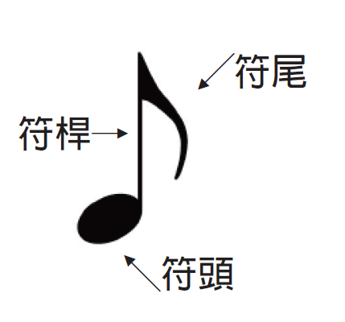
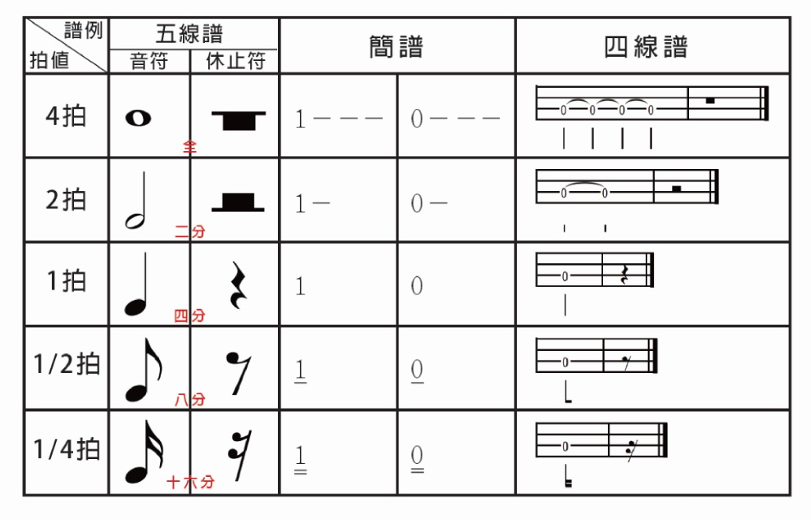
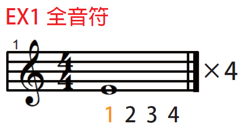
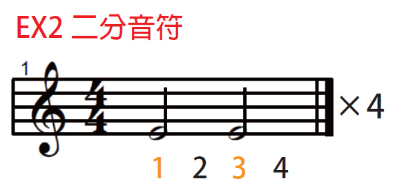
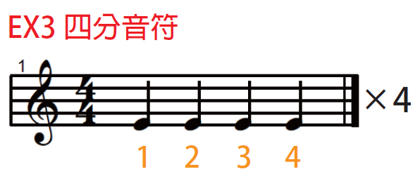
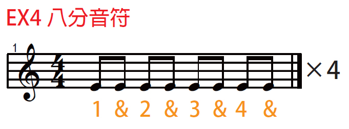

在讀譜之前
要先認識音符和拍值
音符 & 休止符
音符 由符頭、符桿、符尾組成

拍值 是拍子的長度
它不代表絕對的時間長度，而是用來了解它們之間 相對 的時間長度
常見音符種類與拍值
全音符長度是 4 拍二分音符把全音符分成了一半，長度是 2 拍四分音符把二分音符分成一半，長度是 1 拍八分音符把四分音符分成一半，長度是 1/2 拍十六分音符把八分音符分成一半，長度是 1/4 拍

全音符 x 1 = 二分音符 x 2 = 四分音符 x 4 = 八分音符 x 8 = 十六分音符 x 16
節拍練習
一開始初學者不熟會拍子不穩，所以一定要用節拍器
先設定為 60 BPM
BPM (beats per minute) 是每分鐘的拍數
全音符練習
這是五線譜，最前面是高音譜記號
44 是拍號，拍號是指歌曲每小節的拍數，通常寫在譜的最前面
分母 4 代表以 四分音符 為一拍
分子 4 代表每一小節有 四拍
這數字是可以換的，只要知道分母分子代表的意思就好囉

全音符的長度是四拍，剛說過每一小節有四拍
所以一個全音符就塞滿了整個小節
下面的 1 2 3 4 要用嘴巴念拍子
若遇到橘色數字表示右手要刷
先把左手輕輕放在弦上悶住
右手上下刷弦來打拍子
所以就是
嘴巴念 1、2、3、4
右手刷 1
彈四遍的話就是
嘴巴念 1、2、3、4 1、2、3、4 1、2、3、4 1、2、3、4
右手刷 1 - - - 1 - - - 1 - - - 1 - - -
嘴念了 16 次，手刷了 4 次
二分音符練習
二分音符的長度是兩拍
剛說過每一小節有四拍
所以 一個兩拍 + 一個兩拍 = 四拍

彈四遍的話就是
嘴巴念 1、2、3、4 1、2、3、4 1、2、3、4 1、2、3、4
右手刷 1 - 3 - 1 - 3 - 1 - 3 - 1 - 3 -
嘴念了 16 次，手刷了 8 次
四分音符練習
四分音符的長度是一拍
所以四個四分音符就有四拍

彈四遍的話就是
嘴巴念 1、2、3、4 1、2、3、4 1、2、3、4 1、2、3、4
右手刷 1 2 3 4 1 2 3 4 1 2 3 4 1 2 3 4
嘴念了 16 次，手刷了 16 次
八分音符練習
八分音符的長度是 1/2 拍
所以八個八分音符有四拍
譜上的 1、2、3、4 是往下刷，& 是往上刷

兩個八分音符在一起時，符尾可相連，變成ㄇ字型 ♫
兩個十六分也可以喔，就變有兩條槓 ♬
彈四遍的話就是
嘴巴念 1 & 2 & 3 & 4 1 & 2 & 3 & 4 1 & 2 & 3 & 4 1 & 2 & 3 & 4
右手刷 1 & 2 & 3 & 4 1 & 2 & 3 & 4 1 & 2 & 3 & 4 1 & 2 & 3 & 4
嘴念了 32 次，手刷了 32 次